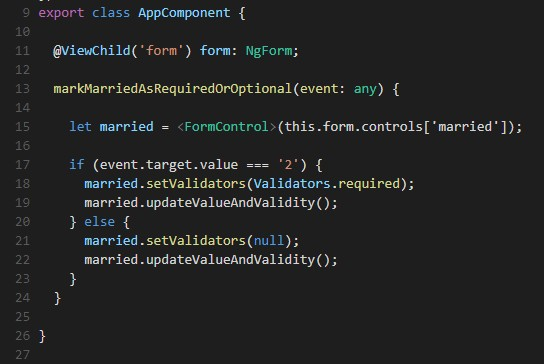

Template-Driven 動態加入驗證屬性注意事項
在開發表單的功能時，常常會有調整 A 欄位的值， B 欄位就要驗證為必填的功能。 以 Template-Driven 的方式實作這功能，我相信閉著眼睛都能實作，例如用 Binding [required] 的方式就能完成。

此時，以為能開心收工了，但…您是否發生過以下的錯誤訊息呢?
案例說明
在解答這個問題之前，先敘述一下將要展示的簡單案例。
- 畫面有 Age 與 Married 兩個下拉選單
- Age 必填，可選擇 Child 與 Adult
- Married ，可選擇 Married 與 Not Yet
- 當 Age 選擇 Adult 時， Married 一定要選擇，並顯示 Required 文字
了解案例後，讀者可以到 Angular-Expression Changed After It Has Been Checked Error Demo 按照步驟操作，即可出現錯誤訊息。 (記得看一下程式碼喔~)
Development Mode
如果讀者有操作上敘案例的話，按下 F12 開啟開發者模式的時候，會看到這段訊息。
什麼是 Development Mode? Development Mode 會有什麼機制? 這是本篇的 Key Point 啊!!!
引用 Angular #6005 的說明
In short, after every round of change detection, dev mode immediately performs a second round to verify that no bindings have changed since the end of the first, as this would indicate that changes are being caused by change detection itself
意思是說，在 Development Mode 的情況下，變更偵測觸發後，會立即執行第二次變更偵測，確保 status 的值沒有被變更。 如果 status 的值被變更了，則會出現該錯誤訊息，而這情形稱之為 change detection loops 。
不建議執行 enableProdMode() 解決這個問題
剛剛那篇 issue 的說明，有提到一個解決方式，就是 enableProdMode() 啟用 Production Mode，恩….沒錯，啟用 Production Mode ，這個問題就不會再出現了。 但是這樣只是把問題隱藏而已，因為 Development Mode 會有這機制，是有原因的 !!!
如 stackoverflow 有人說明，第二次變更偵測的時候，變更偵測自行變更 status ，或者是在執行一個方法時，每次執行都回傳不同的值，這樣會造成 status 非常不穩定。
If the model has changed between the regular and the additional change detection turn, this indicates that either
- change detection itself has caused a change
- a method or getter returns a different value every time it is called
which are both bad, because it is not clear how to proceed because the model might never stabilize.
再來是根據 Angular University 的建議， 最好在開發時期啟用 Development Mode，那將會避免問題發生。
We really have to go out of our way to trigger a change detection loop, but just in case its better to always use development mode during the development phase, as that will avoid the problem.
Lifecycle Hooks
好了!! 接下來就是要找出問題的發生點，在這之前會建議讀者稍微了解一下生命週期的概念。 => Lifecycle Hooks，
根據 Angular University - How to trigger a change detection loop in Angular? 的說明，這錯誤訊息是發生在 Angular Lifecycle Hooks - ngAfterViewChecked 這個階段。
接下來請到線上範例 Angular-Expression Changed After It Has Been Checked Error Demo With Lifecycle Hooks 看一下生命週期 ngAfterContentChecked 與 ngAfterViewChecked 執行的情形。 (記得看一下程式碼喔~)
可以看到 married invalid:true 在 ngAfterViewChecked 的階段，值改變了!!!
至於為什麼會這樣，請讀者看著這張圖，讓我按照順序說明
- 在 Age 還沒選擇時，
2.[required]="age.value === '2'"，不會成立，所以married.invalid === false - Age 選擇 Adult 時， view render 會先 render 到
1.<em *ngIf="married.invalid">Required</em>的位置，此時married.invalid 還是 === false - 接下來 view render 到 married 下拉選單，發現
2.[required]="age.value === '2'"成立了，則married.invalid === true， married.invalid 在這時候 status 改變了 !!! 。(這也是為什麼最一開始的程式範例，要執行步驟四，Required的訊息才會出現的原因) - 在 ngAfterViewChecked(view render 結束) 階段修改 status ，蹦 !! 錯誤訊息發生
雙重驗證上述流程!! 根據上述流程，所以只要將 Required 訊息移到 married 下拉選單後面，讓 married 下拉選單先 render ，之後再 render Required 訊息，就不會有 view render 結束後又改變 status 的情形發生?
A: 沒錯!!!
讀者可以試試看，把 Required 訊息換位置(如下圖)。 讀者可以發現 change detection loops 的情形不再發生 !!
- 在 Age 還沒選擇時，
2.[required]="age.value === '2'"，不會成立，所以married.invalid === false - Age 選擇 Adult 時， view render 會先 render 到 married 下拉選單，發現
[required]="age.value === '2'"成立了，則married.invalid === true。 - 接下來 view render 到
<em *ngIf="married.invalid">Required</em>，因為married.invalid在流程 2 的時候已經是 true ，所以則顯示 Required 訊息。 - 結束。 完全沒有在 ngAfterViewChecked(view render 結束) 階段修改 status
最終解法 !!
雖然上面有提到，只要移動 Required 訊息，問題就解決了，可是 版型就是這樣定的，錯誤訊息就是要擺那裏阿。 那如果錯誤訊息真的要放那邊怎麼辦? 而 Angular 生命週期的機制就是那樣，我們能做的是改變寫法。
請參考下圖，Age 下拉選單增加 chagne 事件，取代 [required]="age.value === '2'" 寫法
- 使用
@ViewChild('form') form: NgForm;取得 NgForm 物件 - 在 markMarriedAsRequiredOrOptional 方法，設定 married 為 required用 NgForm 取得 FormControl 設定 married 為 Required
最後當然還是有提供線上範例啦，讀者可以自行點連結去看看喔。 => Solution
題外話
好吧，其實這也是很重要的一個觀念，但是我不知道擺在文章的哪一段XD。 在這篇 how-does-angular-2-change-detection-really-work 的留言，有人認為說是 change detection loops 是 bug ，而 Angular University 則回應這是 feature 不是 bug ，其理由就讀者自行閱讀了。
小結
想不到一個簡單的小功能造成的一個錯誤訊息，牽扯到的觀念那麼多，剛好也趁這時候認識了 Angular 生命週期與變更偵測的機制。 另外，讀者可以參考下方延伸閱讀的文章，其中有提到 onpush-change-detection ，使用這個方式，也可以解決 change detection loops 的問題，但是原因為何，目前還沒研究出來XD。
參考
[angular-university-how-does-angular-2-change-detection-really-work],[lifecycle-hooks],[stackoverflow-expressionchangedafterithasbeencheckederror-explained],[angular/issues/6005],[thoughtram-angular-2-change-detection-explained]
延伸閱讀
[onpush-change-detection-how-it-works],[training-book-change-detection],[change-detection-strategy],[AbstractControl]


{kind=link}
{kind=link}
{kind=link}
{kind=link}
{kind=link}
{kind=link}
{kind=link}
{kind=link}